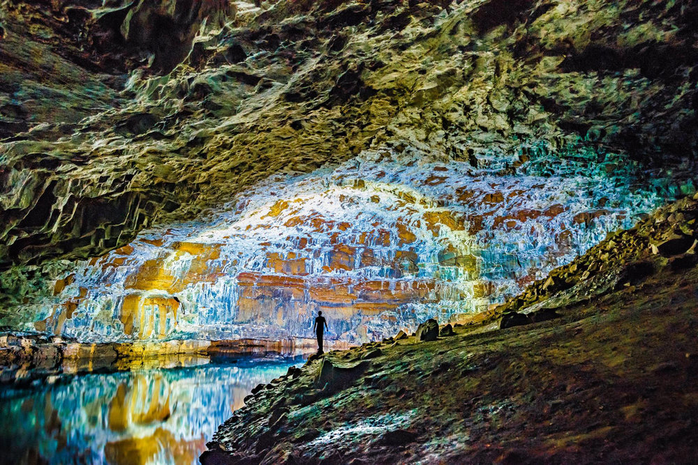

<div class="container project-view">
    
	<div class="row">
        <!-- <div class="col-md-4 project-images" align="center">
            
		</div>
		
        <div class="col-md-4 project-images" align="center">
            
		</div>

        <div class="col-md-4 project-images" align="center">
            
		</div> -->
		

 		<div class="col-md-12">
            <div class="project-info">
                <h2>Japan 8N 9D - Delights of Japan</h2>

                <div class="details">

                    <div class="info-text">
                        <span class="title">Category</span>
                        <span class="val">Honeymoon</span>
                    </div>
                    
                    <div class="info-text">
                        <span class="title">Price</span>
                        <span class="val">INR 3,13,000 per couple onwards</span>
                    </div>

                    <div class="info-text">
                        <span class="title">Inclusions</span>
                        <span class="val">Accommodation, Breakfast, Hotel &amp; Airport Transfers, Sighseeing, English speaking guide</span>
                    </div>
                    
                </div>

				<span class="val">Itinerary</span>
				
				<br/><br/>
				Day 1: Kyoto: Arrive at Kansai International Airport. The staff from motorcoach will assist you in boarding a reserved taxi. After arrival at the hotel, enjoy free time in Kyoto. Overnight in Kyoto.

				<br/><br/>
				
				Day 2: Kyoto – Nara – Kyoto: Today morning, proceed for your full day Kyoto and Nara tour. Depart from Hotel for Nijo Castle, a world heritage site. 
				Tour the historical castle completed in 1626, which was built to provide lodging for Tokugawa Shogun and as a palladium for Kyoto Imperial Palace. 
				Next visit Kinkaku-ji Temple, the wooden architecture is covered in thin layers of pure gold and is surrounded by a beautiful pond. See the Kyoto Imperial Palace (except Monday), 
				which was used as the Emperor’s residence until about 150 years ago. Afternoon enjoy a lunch and then you will head to Nara via Keinawa Expressway to Todai-ji Temple and Nara Park, 
				this is the symbol of the Nara Period and one of the world’s largest wooden structures. Its huge main hall and bronze Great Buddha are impressive to behold. 
				Next visit Kasuga Taisha Shrine, this Nara Period shrine is designated as a World Heritage Site. The deer’s of Nara Park are thought to be the shrine messengers. 
				Visit Nara Nagomikan, the largest souvenir shop in Nara. Enjoy yourself in this spacious shop. Overnight in Kyoto. (L)

				<br/><br/>

				Day 3: Kyoto – Hiroshima: This morning depart for Kyoto station till Hiroshima Station by Shinkansen. Arrive at Hiroshima Station and walk to Hotel Granvia Hiroshima. 
				Head to Miyajimaguchi by bus, from Miyajimaguchi to Miyajima Port from here go to Miyajima by ferry and then visit Itsukushima Shrine, a world heritage site. 
				From Miyajima Port, go to Miyajimaguchi by ferry and then take the bus to Hiroshima Peace Memorial Park and Museum a largescale park that was established in 1949 
				after the Pacific War ended, and is visited by countless visitors as a symbol of peace. Visit Atomic Bomb Dome, a symbol of the disastrous atomic bombing during WWII, 
				the first atomic bombs used in human history. Overnight in Hiroshima.

				<br/><br/>

				Day 4: Hiroshima – Kurashiki – Kyoto: In the morning, depart from your hotel and walk towards Hiroshima Station and then take a Shinkansen to Shin-Kurashiki Station. 
				From Shin- Kurashiki visit the Kurashiki Bikan Historical Quarter. Stroll through many of the original storehouses that have been preserved from the Edo and Meiji Periods. 
				Afternoon have you lunch and visit the Ohara Museum of Art, where you will find not only the collection of modern and western art, 
				but the ancient Greek architecture and the ivy-covered stone walls also attract many visitor. Then from Kurashiki Station visit the Okayama Station by JR local train. 
				Visit the Korakuen Garden, one of the three most beautiful gardens in Japan. Head to Okayama Station and take a Shinkansen to Kyoto Station. 
				After arriving to Kyoto Station you will be taken to your hotel. Overnight in Kyoto. (L)

				<br/><br/>

				Day 5: Kyoto – Tokyo: Today the day will be free in Kyoto until your departure time for Tokyo. You will be transferred to the Kyoto Station in the evening to catch your train to Tokyo. 
				Arrive at Tokyo station and transfer to your hotel. Overnight at your selected hotel in Tokyo.

				<br/><br/>

				Day 6: Tokyo – Mt. Fuji- Tokyo: Today morning, you will be picked up to visit the Mt. Fuji. The bus will head up to the 5th Station along the Subaru Line. 
				The 5th Station is situated at 2,300 meters (7,546 ft) above sea level. At this height, you will be amazed at spectacular, breathtaking views from above the clouds. 
				Enjoy lunch in between. Then visit Lake Ashi Cruise. This crater lake along the southwest wall of the caldera of Mt. Hakone was formed by a powerful volcanic eruption nearly 3,000 years ago, 
				and provides postcard views of Mt. Fuji towering 30 km northwest. Admire the superb view of Mt. Fuji from aboard a ship. Take the Komagatake Ropeway. 
				Take a 7-minute ropeway ride to the peak of Mt. Komagatake. A total of 50 minutes will be spent here, including time to walk around at the peak. 
				Take a cableway ride up to the spiritual Hakone Shrine Mototsumiya (original shrine) that nestles at the mountaintop. Visit Hakone-en. 
				Afterwards, please make your own way to the hotel in Tokyo and check in on your own. Overnight in Tokyo. (L)
				
				<br/><br/>

				Day 7:Tokyo: Today morning, proceed for a Tokyo sightseeing tour which includes a drive-by of the Imperial Palace and the National Diet Building. Later, visit Japan’s No.1 place for seafood, 
				Tsukiji Outer Fish Market, with over 400 shops including fresh fish retailers, grocers, and restaurants. 
				Enjoy shopping and try some local food while exploring this one-of-a-kind location. Then drive by Kabukiza Theater. 
				Later, explore Tokyo SkyTree Town, Senso-ji Temple and Nakamise Shopping Street. Afternoon is free to spend as you like. Overnight in Tokyo.

				<br/><br/>

				Day 8: Tokyo: Entire day will be free in Tokyo to explore the city. Overnight in Tokyo.

				<br/><br/>

				Day 9: Tokyo: You are free to explore the city from check-out until departure from hotel to Narita Airport.
				
				<br/><br/>
				<br/><br/>


				<span class="val">Cancellation Policy</span>
				<br/><br/>

				Rates &amp; Itinerary are subject to change without any prior notice and subject to availability. Rates are not valid during peak periods, events and public holidays where extra surcharges may be applicable. No refund on any unutilised services.

            </div>
        </div>
    </div>
</div>